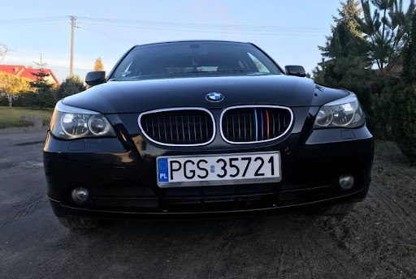
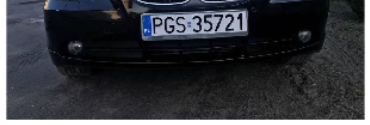
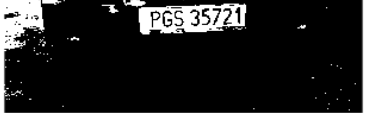
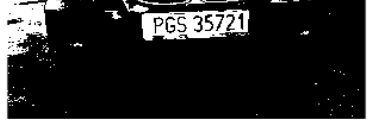
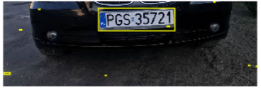
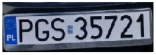
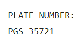

Vehicle Plate Recognition
About
This project's objective is to extract plate numbers of vehicles from images. The scope was limited to European parked cars for time and feasability reasons.
The automatic extraction of vehicle plate number(licence plates) is widely used today in applications such as parking lot managment systems, highway systems and more.
Matlab was used as the development environment.
View project on GitHub
Implementation
Step 1: Construction of a dataset
The testing dataset for this project was manually created with images freely available online. It includes 23 images of different colors, different distances from the camera and different angles. All vehicles in this database are cars and they are either photographed from the front or from the back. View dataset
Step 2: Localisation of the plate
The second and very crucial part was to locate the plate in the image. As human beings this process happens in a matter of seconds and with no apparent extra effort on our behalf. With projects such as this , the computer has to learn or use an algorithm to accurately locate the required region. In this case the algorithm was as follows:
Original Image
This is an example image from out dataset.
Cropped Image
Considering the previous image, the next step would be to crop the image in half because the licence plate is not likely to be found in the top half of the image. This was concluded after careful observation on multiple images of parked cars.
Image with mask
After reducing the noise by cropping the next step is to apply a mask that allows to separate the car from the plate. This is achieved by thresholding.
Binarized Image
The generated image is then binarized in order to create connected components. This is crucial since it allows to apply different criterias in order to choose possible candidates for the licence plate.
Candidate
As previously mentioned there are criterias that are checked with the help of information acquired from the connected components. The first one is the area of the object, second is the ratio of height to width which identifies the rectangularity of the object, and lastly the availability of a blue area inside the object in the left side or the immediate outside the object.
Plate
With careful sorting of possible canditates we get one that matches the criteria which is then considered to be the licence plate.
Step 3: Cleaning
Once step 2 is complete, the obtained image can then be cleaned. This means that it goes through a process of thresholding to highlight the numbers and letters. The cleaning also removing the background, removing any remaining noise and complementing the image to faciliate the next step.
Step 4: Extraction alphanumeric symbols
For this step the OCR method provided by matlab was used to extract the alphanumeric characters from the image. This process is highly affected by the quality of the image
that its given to treat. This is why we added the previous step to clean the plate before passing it to the method. As a result it is able to extract the full licence plate.

Step 5: Validation
The very last step was to validate the pipeline by using a different dataset to obserserve its performate on data it was not tested on. The results showed that even tho the pipeline was overfitted for the testing dataset in the right condition it performed as expected.